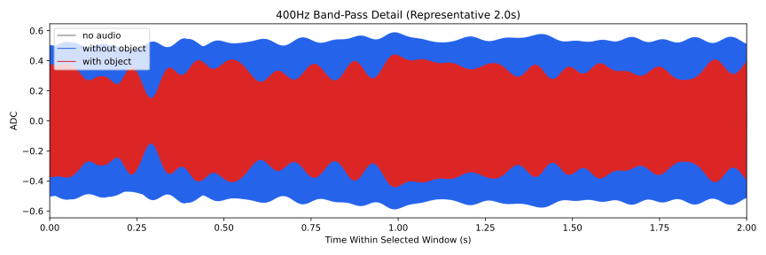
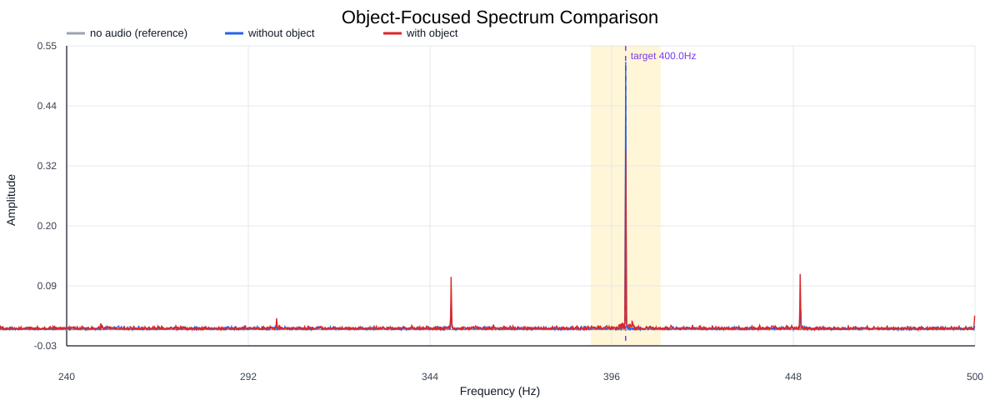
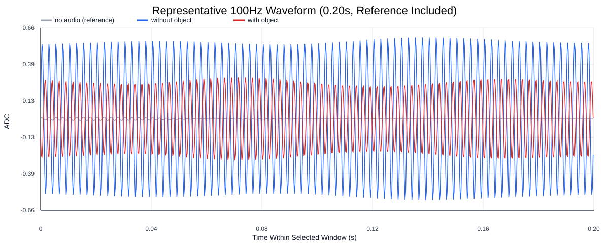
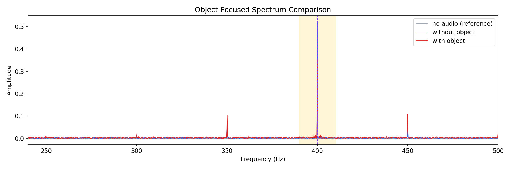
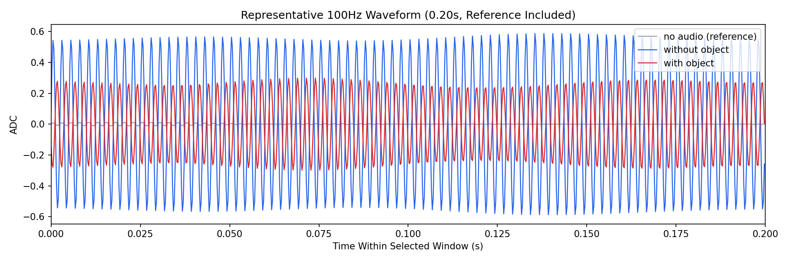

Background: F:\项目类文件夹\异物检测4.10\Data_Dual\frequency_sweep\0400Hz\repeat_03\raw\no_audio.csv
Without object: F:\项目类文件夹\异物检测4.10\Data_Dual\frequency_sweep\0400Hz\repeat_03\raw\without_object.csv
With object: F:\项目类文件夹\异物检测4.10\Data_Dual\frequency_sweep\0400Hz\repeat_03\raw\with_object.csv
| Metric | 无音频 | 100Hz无异物 | 100Hz有异物 | 无异物/无音频 | 有异物/无异物 | 有异物/无音频 |
|---|---|---|---|---|---|---|
| centered_rms | 0.031594 | 0.471928 | 0.421532 | 14.9373 | 0.8932 | 13.3422 |
| raw_target_amp | 0.000826 | 0.523181 | 0.350573 | 633.4832 | 0.6701 | 424.4847 |
| filtered_rms | 0.003677 | 0.370538 | 0.261333 | 100.7805 | 0.7053 | 71.0785 |
| filtered_target_amp | 0.000826 | 0.523181 | 0.350573 | 633.4832 | 0.6701 | 424.4847 |
| filtered_energy_ratio | 0.013543 | 0.616474 | 0.384351 | 45.5204 | 0.6235 | 28.3804 |
| window_filtered_target_amp_mean | 0.002269 | 0.523228 | 0.364723 | 230.5784 | 0.6971 | 160.7277 |
| window_filtered_target_amp_std | 0.003807 | 0.023701 | 0.053673 | 6.2256 | 2.2646 | 14.0985 |




